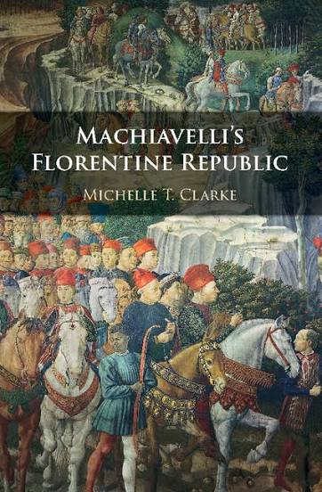

Monograph
Cambridge University Press, 2018
Machiavelli’s Florentine Republic
Michelle T. Clarke · xii + 192 pages · ISBN 9781107125506
The book reconstructs Machiavelli’s account of the threats facing modern republics from his Florentine Histories, the history of Florence commissioned by the Medici in 1520 and presented to Pope Clement VII in 1525. It argues that Machiavelli narrates the defeat of Florentine republicanism to challenge the leading humanist historians, above all Leonardo Bruni, who had celebrated Florence as a model republic. Against them, Machiavelli portrays a city that wavered between anarchy and princely rule, and reveals that conventional ideas of moral and political virtue were the Medici family’s most effective tools for advancing princely power in a city that wished to be free.
Praise
… this is by far the best book-length treatment in English of Machiavelli’s longest work. Intelligent, erudite, and spirited, it should command the attention of diverse scholars and is sure to help revive interest in Machiavelli’s Florentine Histories.
Machiavelli’s Florentine Republic accomplishes much more than repairing the gap in the Anglophone scholarship on Machiavelli’s notoriously elusive Florentine Histories. This clear-sighted, savvy, and compelling interpretation deserves to be read by all interested in republicanism – its history, its meaning, and its ramifications. Clarke’s interpretation is sure to change the course of the scholarly conversation as it establishes Machiavelli’s critical evaluation of his city’s republican government and elucidates his understanding that the modern political problem derives from Rome’s ancient dominion.
Machiavelli’s Florentine Histories is the last of his major works to receive intensive scholarly attention. Because it is a history, his voice is more muted than in his more explicitly theoretical works and there is a seemingly overwhelming mass of factual detail. Clarke has made a major step forward in deciphering the argument of this difficult book, particularly by bringing out the differences between Machiavelli and his civic humanist predecessors, Leonardo Bruni and Coluccio Salutati.
Michelle Clarke’s illuminating study of the neglected Florentine Histories reestablishes Machiavelli’s republican credentials in a new light. She situates the Histories between Machiavelli’s two better known works and gives us a new appreciation of his political theory as a whole. This excellent book offers a fresh and refreshingly independent approach to Machiavelli and the study of modern political thought.
Michelle Clarke’s Machiavelli’s Florentine Republic advances our understanding of Machiavelli in distinctive ways. Not only does Clarke carefully and persuasively show how Machiavelli rejected the historiography of predecessors like Salutati, but she also shows us a Machiavelli more skeptical of Rome – and its imperial project – than he is often made out to be. The clear and crisply written book deeply engages with Machiavelli’s context, and makes important and timely contribution to key debates in Machiavelli scholarship. Readers of Machiavelli will benefit greatly from this study.
A rich scholarly literature has studied Machiavelli’s paramount role within modern republican political theory. Only a few works have reconstructed Machiavelli’s reflections on the Florentine republican experience that he contributed to shape. Michelle T. Clarke’s book offers us an excellent, elegantly written, account of Machiavelli’s considerations on the weaknesses of the Florentine republican elite that paved the way to the Medicean regime. Her work enriches our understanding of the history of republicanism and invites us to meditate from a fresh perspective on the weaknesses of the republics of our times.
Contents
- 1
Introduction pp. 1–26
Introduces the Florentine Histories as Machiavelli’s fullest account of what threatens modern republics. Against the humanist picture of Florence as a republic equal in splendor to Rome, Machiavelli tells the story of a city that never secured a free way of life. The chapter previews the book’s four lines of argument: humanist historiography, the legacy of Roman imperialism, Medici virtue, and political culture.
- 2
Another Republicanism pp. 27–58
Shows how Bruni’s History of the Florentine People recast Florentine republicanism as rule by a virtuous ‘true nobility’, lending historical credit to Medici power. Machiavelli rejects this account and, following the earlier chroniclers, recovers republicanism as the people’s struggle to keep the grandi in check through laws and institutions. The chapter closes by arguing that Quentin Skinner and the Cambridge School have relayed Bruni’s version of republican history without seeing it as an ideological move.
- 3
Italy after the Inundation pp. 59–91
Reads the Discourses and the Histories together as an account of why modern Italy could not rebuild free political life. Machiavelli traces this weakness to Roman imperialism, which remade its subjects into dependents, so that Rome is both the model for modern republics and the source of their problems. The underlying disease is a habit of the weak submitting to the strong for protection instead of acting together, not Christianity as such.
- 4
The Questionable Virtues of the Medici pp. 92–131
Explains how Machiavelli told the truth about his Medici patrons without offending them. Through what the book calls multivocality, writing that carries different meanings for different readers in the manner of Tacitus, his praise of the Medici also exposes their strategy. Where the old nobility had attacked the republic openly and failed, the Medici co-opted it with a reputation for kindness, generosity, and loyalty, building a vast network of clients.
- 5
Republican Virtue, Reconsidered pp. 132–157
Argues that Machiavelli doubts that traditional virtues serve republican liberty any better than princely power. He is skeptical of the Roman social virtues, especially fides (good faith), because they fostered patronage, ‘sects’, and ‘parties’ that let elites gather power outside the law. This makes Machiavelli an unexpected critic of Roman political culture: Rome fell to the same prosocial virtues that later sustained the Medici party.
- 6
Political Ideas in History pp. 158–170
Draws the book’s threads together into a new picture of Machiavelli for whom good political theory depends on good history-writing. Without it, political ideas become detached from reality and vulnerable to the interests of the powerful.
Key concepts
- grandi and popolo
- the ‘big men’ and the people, whose conflict Machiavelli treats as defining Florentine republicanism
- multivocality
- the capacity of one passage to carry different meanings for different readers, which lets Machiavelli praise and criticize the Medici at once
- fides and clientelism
- Roman good faith, which Machiavelli treats as a vice when it binds clients to powerful patrons
- effectual truth
- Machiavelli’s attention to how ideas and virtues actually work in politics, behind republican appearances
- humanist historiography
- the tradition of Bruni and Poggio, which Machiavelli corrects in the Florentine Histories
Texts & interlocutors
Primary texts
- Machiavelli, Florentine Histories
- Machiavelli, Discourses on Livy
- Machiavelli, The Prince
- Leonardo Bruni, History of the Florentine People
- Poggio Bracciolini, Florentine History
- Giovanni Villani, Nuova Cronica
- Livy
- Cicero
- Tacitus
Scholarly conversation
- Quentin Skinner
- Hans Baron
- J. G. A. Pocock
- Maurizio Viroli
- John P. McCormick
- Vickie B. Sullivan
How to cite
Clarke, Michelle T. Machiavelli’s Florentine Republic. New York: Cambridge University Press, 2018. https://doi.org/10.1017/9781316410776.
@book{clarke2018florentine,
author = {Clarke, Michelle T.},
title = {Machiavelli's Florentine Republic},
publisher = {Cambridge University Press},
address = {New York},
year = {2018},
isbn = {9781107125506},
doi = {10.1017/9781316410776}
}